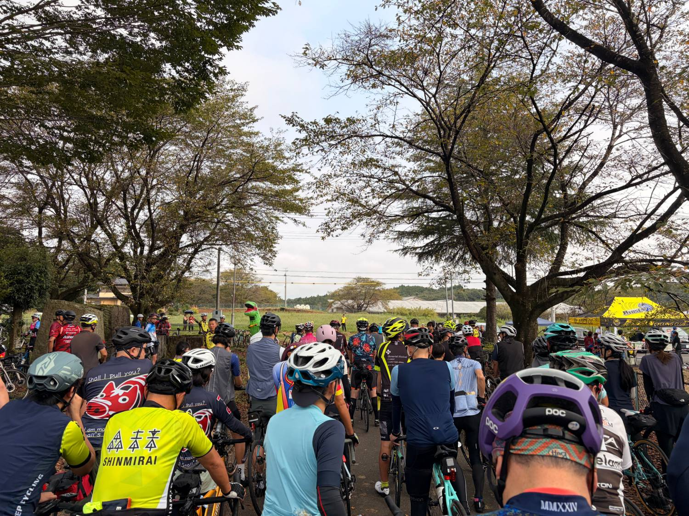
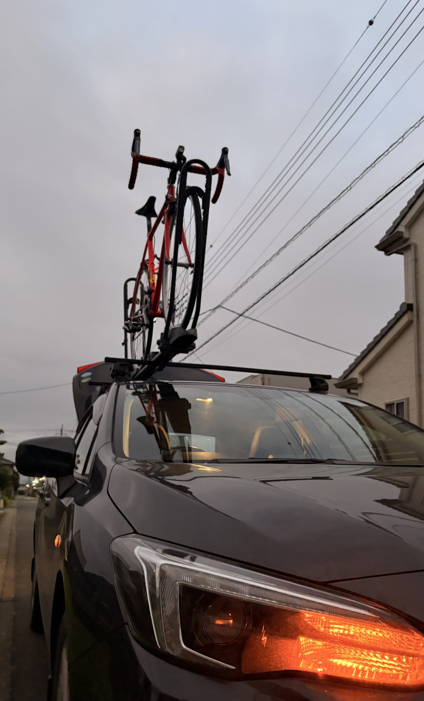
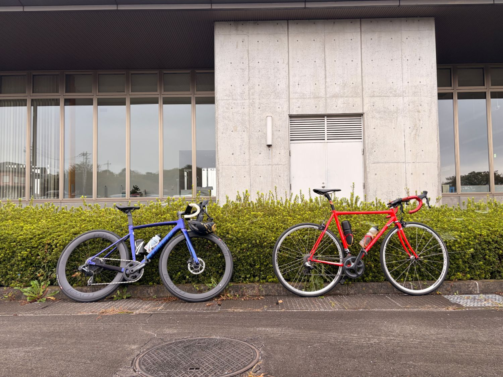
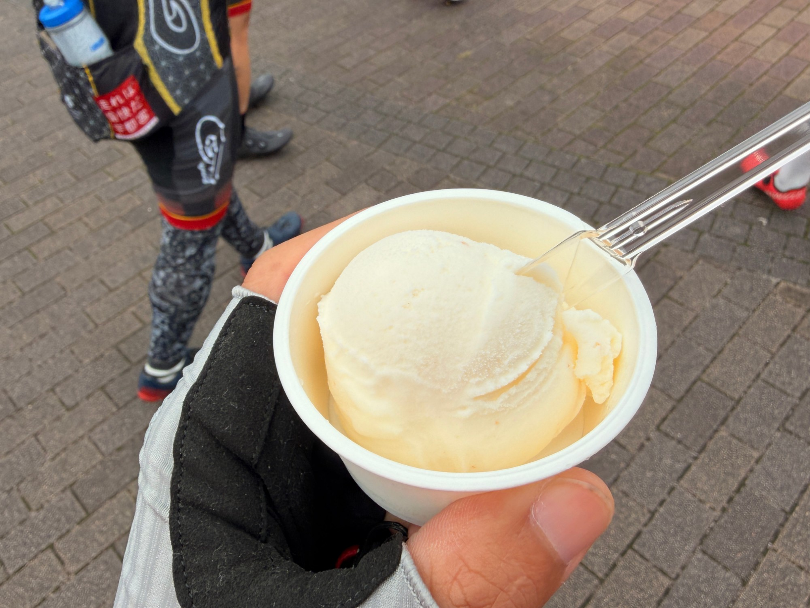
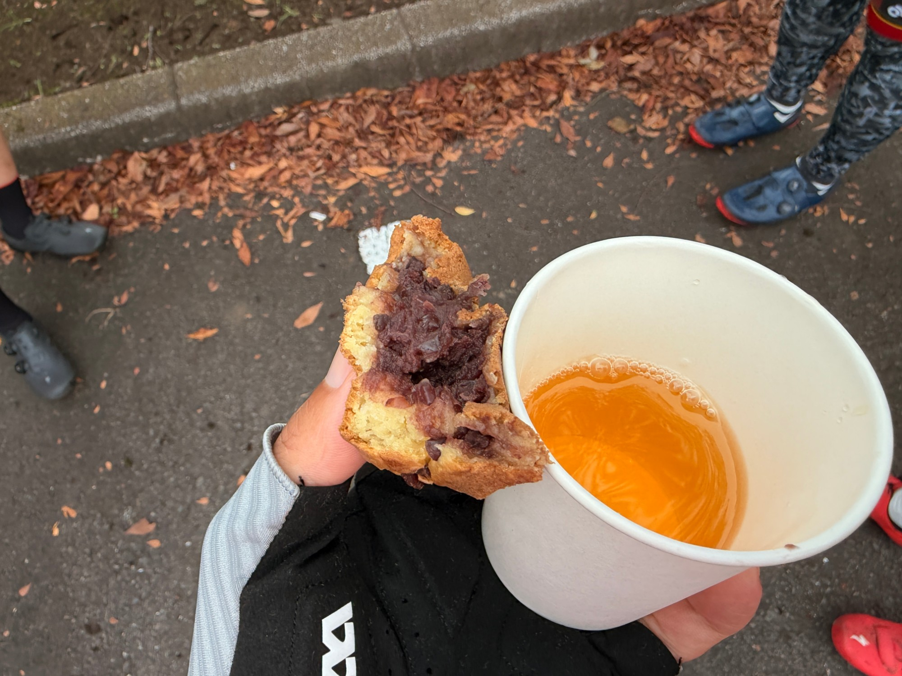
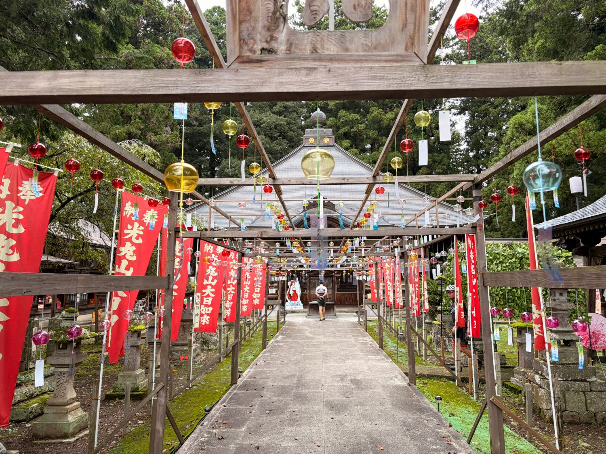
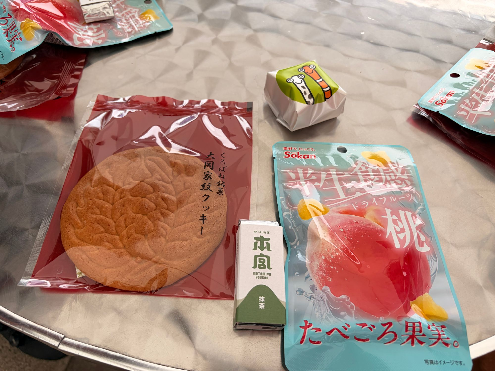
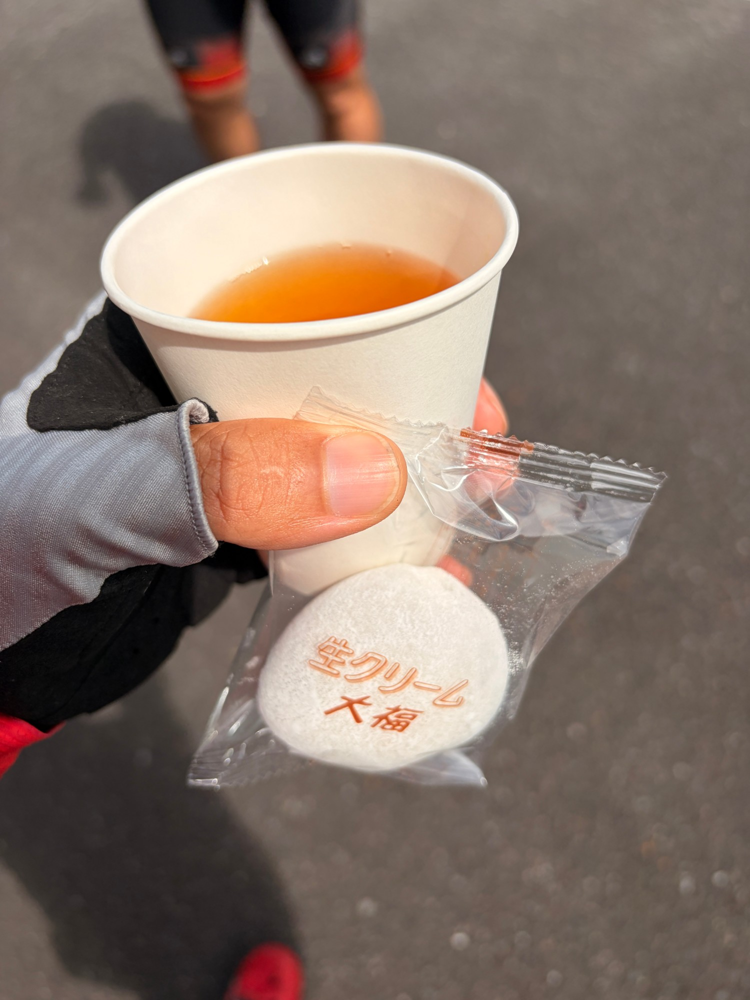
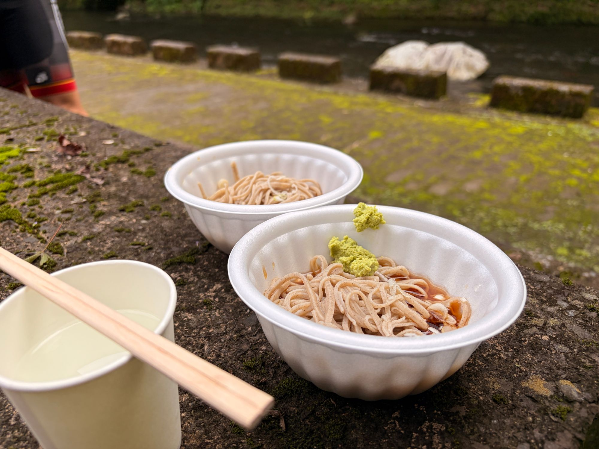
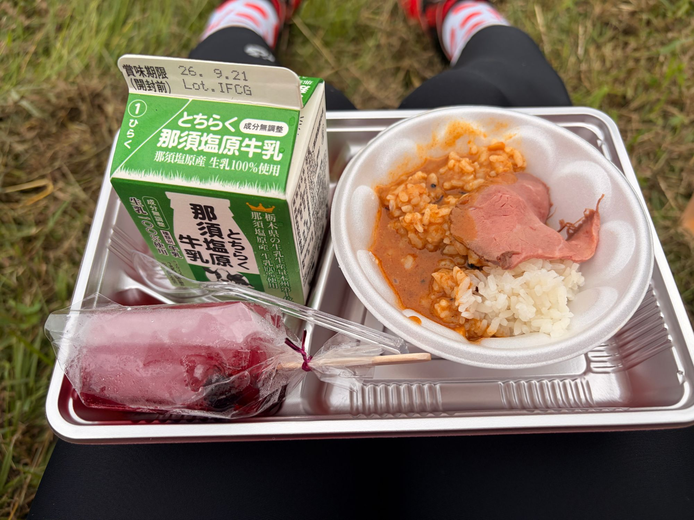

ツール・ド・大那。今日は速く走らない日。走った記憶より食べた記憶が強い
最近はSSTや5分走など、富士ヒルに向けたトレーニング中心の日が続いている。そんな中、今日は友人とツール・ド・大那（DAINA71）へ。
今回は最初から決めていた。「今日は速く走らない日」。一週間以上外を走っていなかったこともあり、トレーニングというより純粋に自転車を楽しむ日にした。

74.13km・3時間27分・TSS92.0
- 全体74.13km / 3時間27分58秒 / 獲得620m
- 負荷平均78W / NP143W / IF0.520 / TSS92.0
数字を見ても分かる通り、本当にゆっくり。終始「今日は速く走らない」と決めていたので、完全にポタリングである。
ただ、TSSだけは92.0と意外に高い。前日の315W×5分×4本がTSS79.3だったので、数字の上では今日の方が負荷は大きい。IF0.520でも、3時間半乗ればこうなる。
朝から自転車を積んで出発
朝は自転車を車に積んで出発。友人と合流して会場へ向かった。


最近はローラーで数字とにらめっこする時間が多かったので、イベント会場に来るだけでもいつもと違う感じがする。
スタート1.5kmで、もう第1エイド
スタートして約1.5km。いきなり第1エイドである。梨が配られた。
早い。さすがに早い。まだ何も消費していない気がする。「もうエイド！？」となったが、運営側もいろいろ考えて、この場所、このタイミングにしたんだろうなぁ……と、つい余計なことまで考えてしまった。
走っている時間より、食べていた記憶が強い
その後もエイドがかなり充実していた。ジェラート、お菓子、大福、そば。次から次へと食べ物が出てくる。






サイクルイベントに来たのか、食べ歩きに来たのか分からなくなってくる。
最近トレーニングを頑張っている影響なのか、とにかく普段からお腹が空く。これだけエイドで食べても、私はまだ食べられる。一緒に走った友人は途中からお腹いっぱいになったようで、そばや大福をくれた。いい人やで。
坂好きにはちょっと物足りない。でも
74km走った割には獲得標高620m。特に強烈な坂もなく、全体的にかなり走りやすいコースだった。坂が好きな私としては、正直ちょっと物足りない。もう少し登らせてくれてもいいんですよ？
ただ、逆に考えれば、坂が苦手な人にはかなり参加しやすいイベントだと思う。速さを競うイベントではないし、エイドを楽しみながらのんびり走るにはちょうどいいコースだった。
ゴール後にカレーと牛乳
そして最後、ゴールした後にも配給があった。那須塩原牛乳とカレー。しかもローストビーフまで載っている。最後の最後まで食べさせてくれるイベントだった。

曇りだからと油断した
この日は曇り。日差しもそれほど強く感じなかったので完全に油断していた。帰ってから気づいたのだが、顔が普通に日焼けしていた。
曇っていても紫外線はちゃんと仕事をしていたらしい。次からは曇りでも油断しないようにする。
こういう日も悪くない
最近は、今日は何W出た、何分維持できた、次は何Wを狙う。そんなことばかり考えて自転車に乗っている。もちろん富士ヒルゴールドを目指している以上、それはそれで楽しい。
でも今日は数字をほとんど気にせず、友人と話しながら走って、エイドに着くたびに食べて、またのんびり走る。一週間以上ぶりの外ライドということもあって、かなりリフレッシュできた。ローラーは効率よくトレーニングできるが、やっぱり外を走る楽しさは別物である。
たまにはこういう日も悪くない。……というか、これだけ食べられるならまた参加したい。そして明日からは、またいつものトレーニングへ戻る。